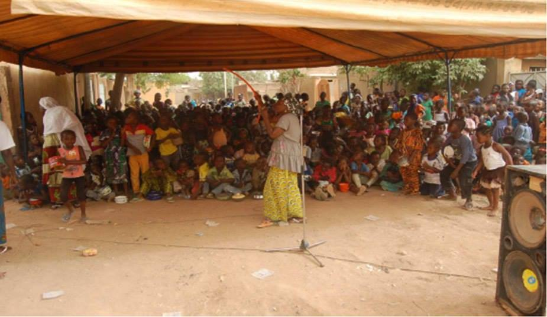
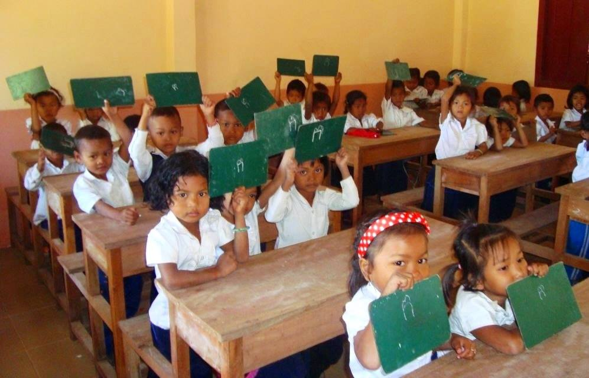
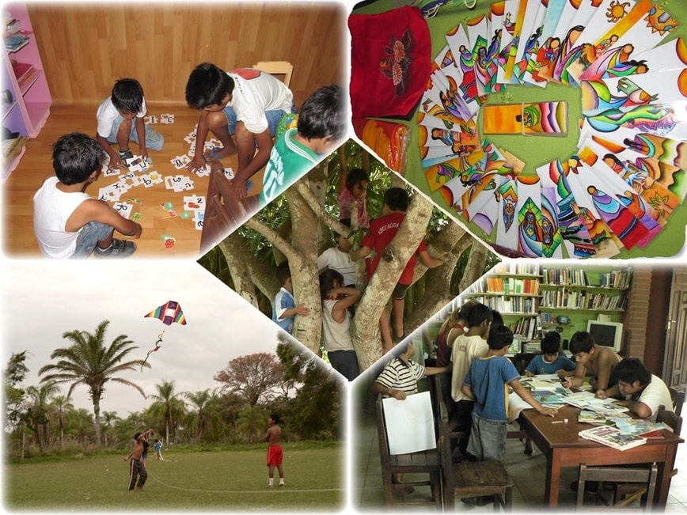

Pour réaliser nos ateliers musicaux, nous avons soigneusement selectionnés des ONGs locales, dont les objectifs et ambitions entraient en résonnance avec les notres
Présentations de nos OGNs partenaires
AJEEA - Ouagadougou, Burkina Faso
L’Association de jeunesse pour l’Epanouissement des Enfants et Adolescent (AJEEA) est une association basée sur le développement local, où la participation communautaire est le maître mot des actions menées en faveur des enfants, des adolescents, et des femmes. L’éducation, le bien-être social et la promotion socio-économique sont au cœur de ses actions.
C’est ainsi que nous allons nous rendre, dès début janvier dans le 7ème arrondissement de Ouagadougou, où à l’aide de cette structure à taille humaine, très proche des locaux, nous allons pendant près de 6 semaines, proposer nos ateliers d’éveil musical à plus de 150 enfants !
SJ Vietnam
SJ Vietnam est une association basée à Hanoï et Ho Chi Minh qui porte un intérêt particulier au développement de la jeunesse vietnamienne. En effet, elle est à l’origine de la création de plusieurs bâtiments scolaire, et mène des programmes éducatifs en collaborations avec des écoles dans tout le pays.
Notre troupe ira dans un de leur centre d’aide scolaire, à Tuy Hoa City, dans lequel des actions d’éveil au théâtre et à l’art ont été menés les années précédentes.
N’hésitez pas à visiter leur site internet pour plus d’informations sur leur action !

AER Cambodge
Créée pour répondre aux guerres qui ont sévi au Cambodge, et dont les principales victimes sont toujours des enfants, l’association AER Avenir pour l'Enfant des Rizières s’est donné pour vocation d’apporter à des familles en situation de pauvreté et de précarité des moyens de vivre décemment. Pour les enfants notamment, l’AER leur offre l’éducation, et encadre ainsi une soixantaine de collégiens et lycéens, ainsi qu’une trentaine de primaires.
C’est donc avec ces enfants que nous allons passer 2 semaines au début du mois de mai en pleine campagne, à 60 kilomètres de Siem Reap.
Mi Rancho - Santa Cruz de la Sierra, Bolivie
L'Asociacion Mi Rancho a été fondée en 1992 afin d'apporter une aide aux enfants livrés à eux-mêmes dans les rues de la ville la plus peuplée de Bolivie, Santa Cruz de la Sierra. Durant les dernières décennies, sa population n'a cessé d'augmenter au fur et à mesure que ses ressources ont diminué. Aujourd'hui, de nombreuses familles tombent dans la précarité et de plus en plus de jeunes se retrouvent seuls. L'ambition de l'association Mi Rancho est de redonner leur chance à ces jeunes en leur proposant un foyer sûr, un cadre pour se développer, un centre pour échanger et de nombreuses ressources pédagogiques et de loisir pour s'épanouir, apprendre, grandir et rêver.
De fin mai à début juillet 2019, les membres de Loud'N Around rencontreront donc ces jeunes pour échanger avec eux et réaliser les ateliers d'éveil musical qu'ils leur ont concoctés. Ce ne sera pas la première fois que l'association accueillera des volontaires étrangers, mais elle adore ça : la rencontre de deux cultures si différentes est un formidable moteur d'ouverture culturelle, pour les enfants comme pour les intervenants !
